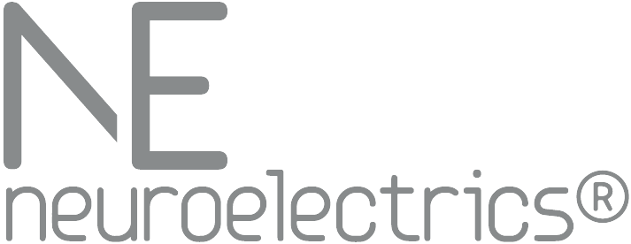
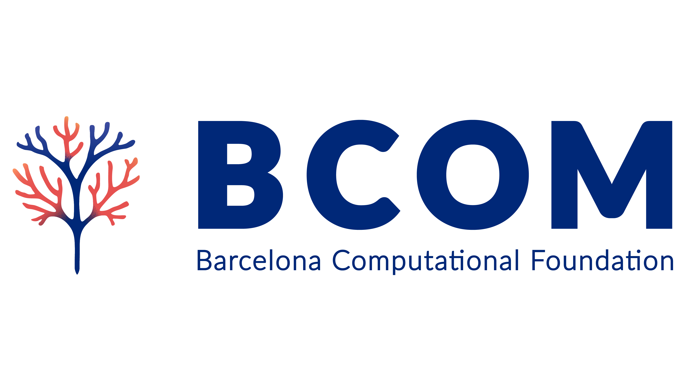
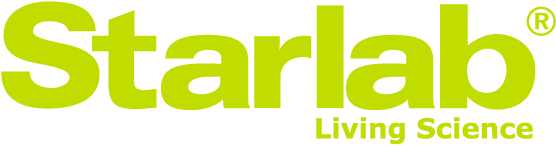

·
·
Neuroelectrics, BCOM, and Starlab form an integrated consortium that spans the full translational arc — from foundational computational theory through large-scale EEG data science to regulatory-grade clinical devices. Each entity contributes a distinct and complementary capability; together they offer grant agencies and contract partners an end-to-end value chain that few single organisations can match.
Neuroelectrics is a for-profit medical-device company that owns the consortium's clinical commercialisation lane. It designs, manufactures, and markets CE-marked and FDA-cleared EEG recording (Enobio) and transcranial electrical stimulation (Starstim) systems, and turns BCOM's models and Starlab's EEG analysis pipelines into regulatory-grade medical software delivered as cloud-based SaaS. The company operates under ISO 13485 and acts as sponsor for clinical investigations under MDR/IDE frameworks. Its hardware also serves as the substrate for Starlab's non-clinical product lines.
Starlab is a for-profit affective-computing and neuroscience company that owns the consortium's non-clinical commercialisation lane — cosmetics, fragrance, neuromarketing, content testing, and research services. It owns EEG application development, has assembled one of the largest curated EEG corpora in the field, and (jointly with BCOM) leads the development of foundational EEG models that underpin every downstream product. Its applications run on Neuroelectrics hardware.
BCOM is a non-profit foundation that acts as the consortium's lead think tank, IP source, and deep-tech producer. It does not commercialise; it produces the ideas, theory, and software that flow downstream to NE (for clinical productisation) and Starlab (for non-clinical productisation). BCOM is sustained by support from the two for-profit partners (mechanism TBD), in exchange for the science and deep tech it provides.
Two of the three entities commercialise; the third produces. Neuroelectrics owns the clinical commercialisation lane (Class IIa+ medical software, hospital channel, regulatory sponsor). Starlab owns the non-clinical commercialisation lane (cosmetics, fragrance, neuromarketing, content testing, research services). BCOM is a non-profit foundation that produces the deep tech both commercialisers depend on — Whole-Brain Model and personalisation, Kokoro neurophenomenology, the algorithmic-agent and emotion theory, the ALGA Engine — and is sustained by support from NE and Starlab in exchange (mechanism TBD).
The flow is: BCOM creates the science and models; Starlab develops EEG applications and (jointly with BCOM) the foundational EEG models that underpin every downstream product; Neuroelectrics implements BCOM's WBM and Starlab's pipelines as regulatory-grade clinical SaaS, and also supplies the EEG hardware that Starlab's non-clinical applications run on. Intellectual property, data governance, and regulatory responsibility are cleanly delineated across the three entities, reducing risk and streamlining the exploitation pathways that reviewers and programme officers value.
For contract partners and grant agencies, the Trigon offers a turnkey capability spanning both clinical and non-clinical lanes: from theory and computational modelling through EEG analysis and phenomenological measurement to the delivery of either a CE-marked clinical product (via NE) or a premium non-clinical product (via Starlab) — without raw data leaving the client's control.
The clearest way to see the triad in action is through the two proposals the consortium submitted in April 2026. Both are co-designed across NE, BCOM, and Starlab, and both rely on the same role split — theory and computational models from BCOM, EEG data pipelines and platform engineering from Starlab, devices, regulatory framing, and clinical-trial sponsorship from Neuroelectrics — but applied to very different scientific questions, populations, and regulatory regimes.
SYNERGIA pairs psilocybin-assisted therapy with individualised transcranial direct-current stimulation to open and stabilise plasticity windows in major depressive disorder. The Stage II proposal includes a 4-site, 120-patient European RCT (SYNERGIA-D) and a healthy-volunteer plasticity-mapping study (SYNERGIA-M).
ENAKD/Tx combines real-time EEG with immersive nature-inspired algorithmic art (ALGA) and a reinforcement-learning controller that steers the experience toward "compressibility on the edge" — the regime where predictive-processing error is informative without being overwhelming. The proposal pairs a mechanistic plasticity study (ENAKD-M, healthy adults at IfADo) with a clinical pilot (ENAKD-D, adolescents at SJD).
Clinical trials (e.g., Horizon Europe, NIH): BCOM conceives the scientific rationale, the computational model linking intervention to mechanism, and the Kokoro phenomenology protocol for the subjective-outcome layer; Starlab provides the EEG analysis pipeline and biomarker endpoints; Neuroelectrics supplies devices, acts as clinical-trial sponsor, and delivers the software platform.
Clinical home monitoring & DTx (NE-led): Daily EEG at home (Enobio + EmoWave) paired with the Kokoro phenomenology companion app — BCOM's Whole-Brain Model interprets both streams, the clinician dashboard plots brain and experience side by side, and Starstim closes the loop in the DTx generation.
Biomarker discovery (e.g., ERC, industry contract): BCOM defines the computational target and the structured subjective endpoint (Kokoro); Starlab validates against its EEG corpus; Neuroelectrics transforms the validated biomarker pair into regulatory-grade medical software on its cloud platform.
Regulatory science (e.g., FDA breakthrough-device pathway): Neuroelectrics leads regulatory strategy; BCOM and Starlab supply the scientific evidence package and data analysis that support the clinical-validation dossier.